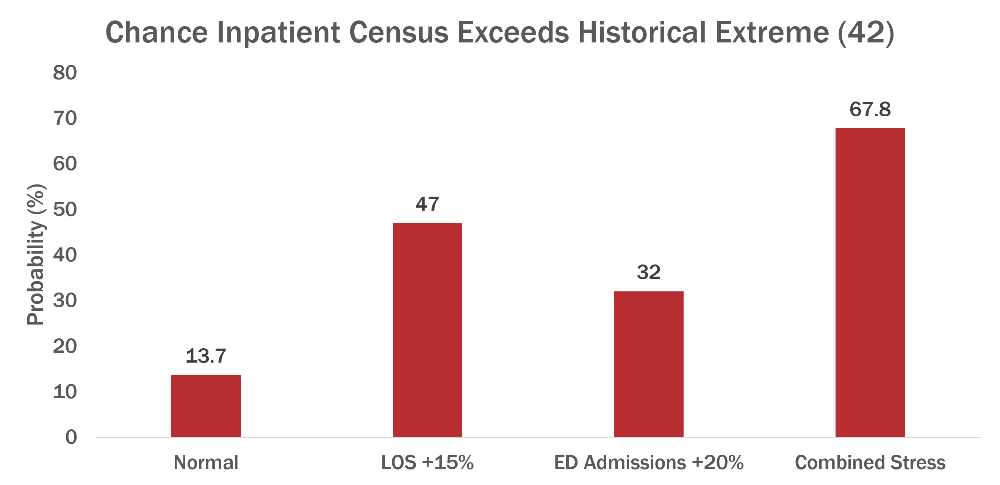

Surgical Ramp-Up Capacity Simulation
A Monte Carlo capacity-planning analysis exploring how a hospital could increase elective surgical volume while managing downstream PACU and inpatient capacity risk.
Question
How much additional elective surgical volume could a hospital safely add without creating unacceptable pressure on PACU or inpatient capacity?
Rather than treating every additional surgery as having the same operational impact, the analysis also asked how procedure type, inpatient admission, length of stay, and existing hospital census change the amount of volume the system can realistically absorb.
Why It Matters
Hospitals cannot safely increase surgical volume by looking at operating-room capacity alone. More procedures can create downstream pressure in PACU and on inpatient beds, and that pressure changes depending on how many patients are admitted, how long they stay, and what the hospital census already looks like.
A useful ramp-up plan therefore has to balance growth against capacity risk: adding volume where the system can absorb it, while slowing or pausing when inpatient census, length of stay, or emergency demand begins to push the hospital toward unsafe operating conditions.
Data
The analysis used two hospital datasets stored in BigQuery:
- Operating-room encounters (
or_encounter) — 1,034 surgical cases with procedure information, case type, surgical timing, and PACU arrival/discharge timestamps. - Hospital encounters (
hsp_encounter) — 1,974 hospital stays with admission and discharge timestamps, diagnosis-related group information, and admission origin.
The two tables were linked using the hospital encounter identifier (or_csn → hsp_csn) so each surgical case could be connected to its associated inpatient stay. Before modeling, I validated the grain of both tables and confirmed that the join preserved all 1,034 surgical cases without introducing duplicate or unmatched records.
From these records, I derived the measures needed for the analysis, including PACU length of stay, procedure timing, inpatient length of stay, daily surgical volume, PACU occupancy, and inpatient census.
Methods
I approached the problem in four stages:
Reconstructed baseline hospital capacity
I used surgical timing, PACU length of stay, inpatient length of stay, inpatient census, and ED-origin admissions to understand how patients moved through the system and where capacity pressure tended to accumulate.Compared three ramp-up strategies
I tested:- an immediate ramp, which added cases using the existing scheduling pattern;
- a phased ramp, which gradually added cases with checkpoints between phases; and
- a capacity-aware ramp, which attempted to place additional cases into historically lower-pressure scheduling windows.
Ran Monte Carlo simulations
Rather than assuming one fixed outcome, I repeatedly resampled historical patient-flow patterns to generate a distribution of possible capacity outcomes for each strategy.Key simulation outcomes included:
- peak inpatient census;
- probability of exceeding the historical maximum census of 42;
- additional time spent at elevated census levels;
- PACU occupancy pressure; and
- the additional capacity exposure created by increasing surgical volume.
Stress-tested the recommended strategy
The final ramp-up plan was tested under four operating environments:- normal conditions;
- inpatient length of stay increased by 15%;
- ED admissions increased by 20%; and
- both stresses occurring together.
This let me evaluate not only whether a ramp-up strategy worked under typical conditions, but how resilient it remained when the hospital system was already under pressure.
Results
The analysis supported a phased increase of 12 elective surgical cases over a 13-week quarter, representing approximately a 10.6% increase over the baseline quarterly volume of 113 elective cases.
Under normal operating conditions, the phased +12 strategy produced:
| Metric | Result |
|---|---|
| Additional elective cases | 12 |
| Quarterly volume increase | 10.6% |
| Probability inpatient census exceeds 42 | 13.7% |
| P90 peak inpatient census | 43 patients |
| P90 additional time at census ≥33 | 73 hours |
| P90 PACU time above 4 occupied bays | 45 minutes |
The simulations also showed that inpatient capacity was the primary constraint on further surgical growth. PACU pressure tended to be short-lived, while admitted surgical patients remained in the hospital for multiple days and created overlapping demand on inpatient beds.
Stress Testing
The recommended +12 strategy became substantially riskier when inpatient length of stay or emergency demand increased.

| Operating Condition | Probability Census >42 | P90 Peak Census |
|---|---|---|
| Normal | 13.7% | 43 |
| LOS +15% | 47.0% | 49 |
| ED Admissions +20% | 32.0% | 46 |
| Combined Stress | 67.8% | 52 |
Longer inpatient stays produced the strongest individual increase in capacity risk, while the combination of longer stays and greater ED demand pushed the probability of exceeding the historical extreme census above 67%.
Interpretation
The results suggest that surgical capacity is not simply a question of how many additional procedures can be scheduled. The more important question is what downstream demand those procedures create and what condition the hospital is already in when they occur.
Under normal conditions, the phased +12 strategy increased elective volume while keeping the probability of exceeding the historical extreme census relatively low. That does not make +12 a permanent or unconditional capacity limit. Instead, it represents a reasonable increase under the operating conditions represented in the historical data.
The stress tests show why that distinction matters. Capacity risk rose sharply as inpatient length of stay and emergency demand worsened, with longer stays creating the stronger individual effect and combined stress producing the greatest pressure on the system.
The practical implication is that inpatient conditions should act as a control signal for surgical growth. Elective volume can be increased when census and patient flow remain stable, but the ramp should slow, pause, or be reconsidered when length of stay or emergency demand begins increasing.
Rather than producing a single scheduling number, the simulation therefore supports a conditional ramp-up strategy: increase volume gradually, monitor the system between phases, and allow current capacity conditions to determine whether the next increase should proceed.
Limitations
Several constraints affect how broadly these results should be interpreted.
The analysis used synthetic healthcare encounter data. The workflow is designed to resemble a real hospital capacity problem, but the numerical results should not be treated as operational guidance for an actual facility without validation against real local data.
The census thresholds are historical reference points, not confirmed bed-capacity limits. A census of 33 represented the historical P90 level and 42 represented the historical maximum, but neither value was verified as the hospital’s true staffed or physical capacity.
The simulation depends on historical patient-flow patterns. Monte Carlo resampling captures variation present in the available data, but unexpected changes in procedure mix, staffing, discharge behavior, or patient acuity may create conditions not represented in those historical patterns.
Stress testing covered a limited set of scenarios. The project explicitly modeled increased inpatient length of stay and increased ED admissions, but other operational disruptions could also affect capacity.
For those reasons, the +12 recommendation should be interpreted as a scenario-based planning estimate rather than a fixed capacity limit. In practice, the model would need to be recalibrated with current hospital data and actual staffing and bed constraints before being used for operational decisions.
Next Steps
The next step would be to move the model closer to real operational decision support.
Validate the framework with real hospital data. Re-estimate patient-flow distributions, census thresholds, and staffing constraints using current facility-specific data rather than synthetic encounters.
Recalibrate the simulation over time. Length of stay, ED demand, surgical mix, and baseline census can change, so the model should be periodically updated rather than treated as a one-time capacity estimate.
Expand the stress scenarios. Future simulations could incorporate PACU staffing shortages, changes in procedure mix, discharge delays, seasonal demand, or multiple disruptions occurring at the same time.
Turn the guardrails into a monitoring tool. The Green / Yellow / Red framework could be connected to current census, LOS, ED demand, and PACU staffing metrics so leaders can see when the next phase of surgical growth should proceed, hold, or pause.
Ultimately, the goal would be to evolve the simulation from a retrospective planning exercise into a continuously updated decision-support system.
Repository
The full analysis, notebook, methodology, and project presentation are available on GitHub.